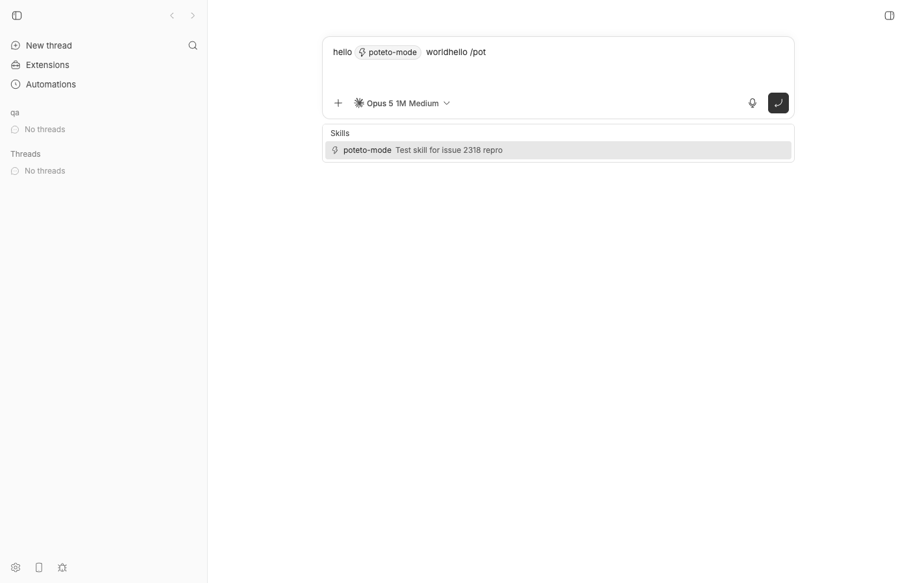
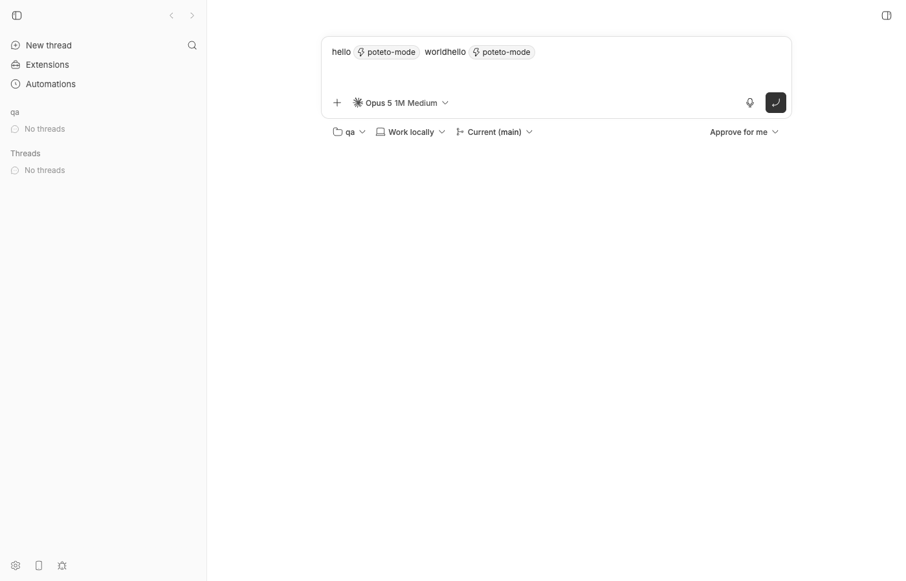
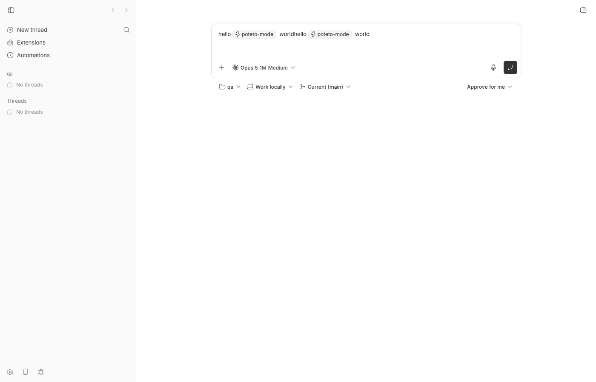
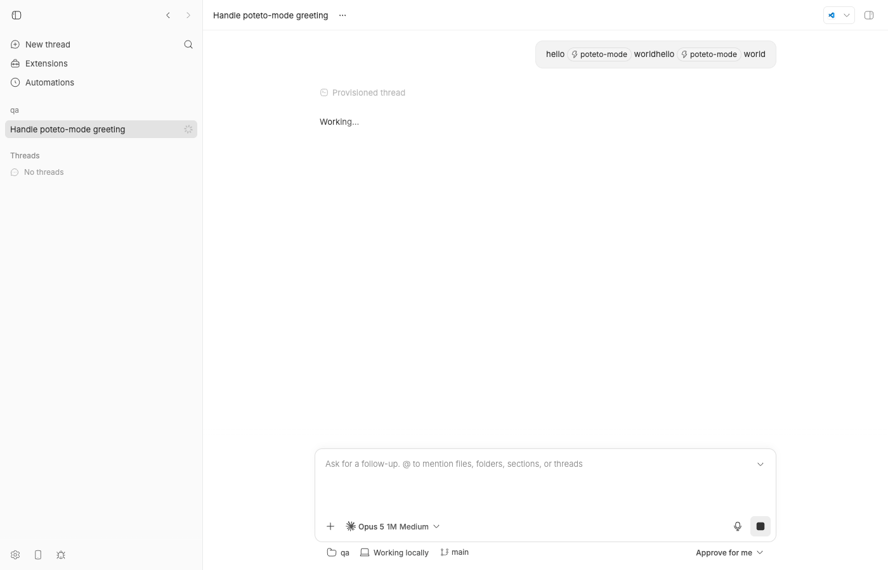
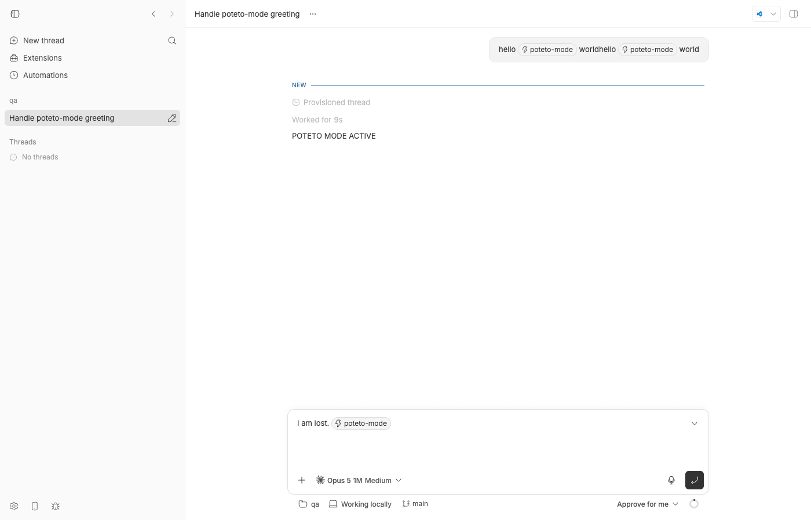
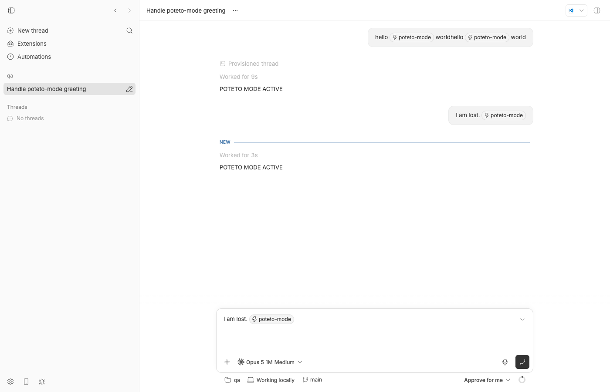
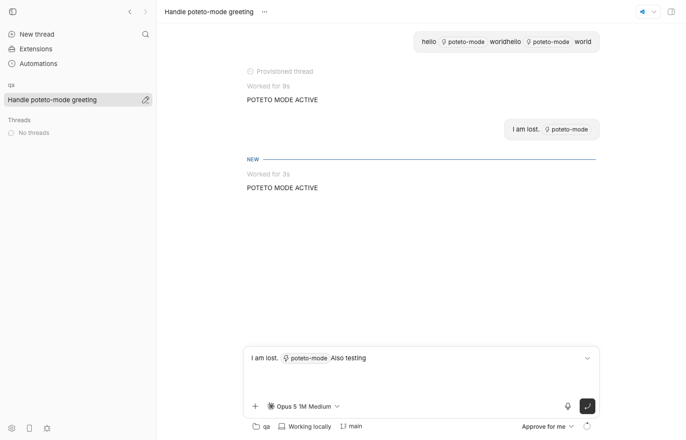

#2318 · Skill chip picked mid-message is serialized without trailing space and never reaches Claude Code as a skill
Verdict: PARTIALLY REPRODUCED · Root-cause confidence: high
Both halves of the report are real, but the first one does not happen the way the issue describes. Picking a skill from the / menu does insert a trailing space after the chip (verified on the base commit and in the 0.39.0 source). The glued /poteto-modeAlso text appears when text is entered directly after the chip with no separator between them — which is exactly the state the composer is in after a sent prompt is restored into it (ArrowUp history recall, "Edit" on a queued message, edit of a sent message), after voice/plugin insertion, or after the caret is placed right behind the chip — because the chip's serialization has no word-boundary guard. The second half (Claude Code only expands /skill at the start of a prompt, so a mid-message chip never runs the skill) is verified exactly as claimed.
1. TL;DR
The composer renders a picked skill as a pill ("chip") whose plain-text form is /<name>. When the message is serialized, the pill's text is concatenated with whatever text node follows it with no separator of its own; the only separator is the literal space that the picker inserts at pick time. That space is dropped whenever the pill is the last token of a message (send-time trim), and every path that puts a sent prompt back into the editor (ArrowUp history recall, queued-message edit, sent-message edit) rebuilds the doc with the caret directly behind the pill. Typing there yields /poteto-modeAlso testing; so does voice/plugin insertion (insertTextAtCursor), which reads the pill as a "\n" leaf and believes a separator already exists. Independently, bb sends the message text verbatim to the Claude Agent SDK, and Claude Code (bundled 2.1.197) only treats /name as a slash command when it is the first token of the prompt — a mid-message skill chip is just text, so the skill is never expanded and the model reports it as not available. bb already interprets its own /plan pill by mention metadata, independent of position; nothing equivalent exists for skill pills.
2. Claims vs findings
| Claim from the issue | Status | Evidence |
|---|---|---|
| "The chip is serialized with no trailing space, so the skill name is glued to the next word." | Partially verified | The pick path inserts a trailing space (apps/app/src/components/promptbox/PromptBoxInternal.tsx#L2383-L2388); the live pick produced hello /poteto-mode world (two spaces: the inserted one plus the one the repro types). The chip itself carries no boundary guard (apps/app/src/components/promptbox/editor/prompt-editor-serialization.ts#L980-L996), so text entered right behind it glues. Reproduced live via ArrowUp history recall (I am lost. /poteto-modeAlso testing, figure 7) and in two failing unit tests (keyboard typing and insertTextAtCursor). |
| "Claude Code only expands slash commands at the start of a message, so a mid-message chip is never executed as a skill regardless of spacing." | Verified | Headless run of the Claude Code binary bb bundles (2.1.197) with all tools disallowed: hello /poteto-mode world → "I don't have a /poteto-mode command registered"; /poteto-mode hello world → POTETO MODE ACTIVE (the skill body). In the bb thread the model's reasoning says "/poteto-mode isn't a skill I have available" before it goes hunting with Bash. |
| "The agent said /poteto-mode isn't an installed skill even though ~/.claude/skills/poteto-mode resolves." | Unverified (user environment) | Cannot inspect the reporter's remote Linux host. In this repro the skill lives in the workspace's .claude/skills, bb's picker lists it (figure 1), and Claude's first reaction was the same "isn't a skill I have available". It then found the file via ls/find and launched it with the Skill tool; a skill under ~/.claude/skills on the reporter's host was not found that way. |
| "The skill has disable-model-invocation: true, so it is hidden from the model's catalog and the slash path was the only way to run it." | Partially verified | Claude's reasoning confirms the skill "wasn't included in the available skills list". However, Claude Code 2.1.197 still executed Skill {"skill":"poteto-mode"} once the model decided the user had explicitly asked for it, so the slash path is the intended way, not strictly the only one. |
| "bb injects SKILL.md content for its own global skills, independent of the provider's slash parser." | Refuted (as stated) | bb stages its managed skills as a local Claude plugin (bb-global-skills) via skills/configure (plugins/provider-claude-code/src/bridge/skill-plugins.ts#L13-L24); that adds them to Claude's catalog, it does not put SKILL.md into the prompt. No bb code expands any /skill token into the prompt for any provider. |
| "bb thread log shows /<skill>world; the skill does not run." (repro steps 1–3) | Partially verified | Following steps 1–3 literally on the base commit gives hello /poteto-mode world in bb thread log. The glued form appears only in the no-separator states listed above. The "skill does not run" part is verified either way (Claude Code position rule). |
3. Environment
- bb: worktree at base commit
494f66526913557ab076e048218236f0a6610927(origin/main has no later commits touching the composer, client-core prompt code, the claude-code plugin, or the server thread/skill services — not already fixed). Issue filed against desktop 0.39.0; the trailing-space pick logic is identical indesktop-v0.39.0. - macOS 26.5.2 (Apple Silicon), Node v22.23.1, pnpm, Chrome via doobie for screenshots.
- Claude Code provider:
@anthropic-ai/claude-agent-sdk0.3.197 bundling Claude Code 2.1.197 (the same binary was used for the headless CLI experiments). Model in the thread: Opus 5 (1M), medium reasoning. - Dev instance (own worktree, isolated): App
http://localhost:16901, Serverhttp://localhost:24901, Host daemonhttp://127.0.0.1:32901, data dir~/.bb-dev/bb-machines-HOST.getbb.app-checkouts-bb-.claude-worktrees-wf_846839f8-f8a-41-1b0fd30d5953(deleted at cleanup). Scratch project:/tmp/bb2318-qa(git repo with.claude/skills/poteto-mode/SKILL.md, see below).
4. Minimal reproduction
4a. The chip has no boundary guard (unit tests, fail on base)
- Save
issue-2318-skill-chip.test.tsxtoapps/app/src/components/promptbox/and run:pnpm -C apps/app exec vitest run src/components/promptbox/issue-2318-skill-chip.test.tsx
Both tests fail on the base commit. The editor starts from the restored-draft state (I am lost. /poteto-mode+ the skill mention range, caret at the end) and entersAlso testingonce as keyboard text, once throughinsertTextAtCursor(voice / plugin path):RUN v4.1.1 /Users/USER/.bb-machines/HOST.getbb.app/checkouts/bb/.claude/worktrees/wf_846839f8-f8a-41/apps/app Not implemented: Window's scrollBy() method ❯ @bb/app:isolated src/components/promptbox/issue-2318-skill-chip.test.tsx (2 tests | 2 failed) 134ms × keyboard typing after a restored skill chip is glued to the skill name 105ms × insertTextAtCursor (voice / plugin insert) after a skill chip is glued too 29ms ⎯⎯⎯⎯⎯⎯⎯ Failed Tests 2 ⎯⎯⎯⎯⎯⎯⎯ FAIL @bb/app:isolated src/components/promptbox/issue-2318-skill-chip.test.tsx > issue #2318: text entered right after a skill chip > keyboard typing after a restored skill chip is glued to the skill name AssertionError: expected 'I am lost. /poteto-modeAlso testing' to be 'I am lost. /poteto-mode Also testing' // Object.is equality Expected: "I am lost. /poteto-mode Also testing" Received: "I am lost. /poteto-modeAlso testing" ❯ src/components/promptbox/issue-2318-skill-chip.test.tsx:114:27 112| 113| const latest = changes[changes.length - 1]; 114| expect(latest?.value).toBe("I am lost. /poteto-mode Also testing"); | ^ 115| }); 116| ⎯⎯⎯⎯⎯⎯⎯⎯⎯⎯⎯⎯⎯⎯⎯⎯⎯⎯⎯⎯⎯⎯⎯⎯[1/2]⎯ FAIL @bb/app:isolated src/components/promptbox/issue-2318-skill-chip.test.tsx > issue #2318: text entered right after a skill chip > insertTextAtCursor (voice / plugin insert) after a skill chip is glued too AssertionError: expected 'I am lost. /poteto-modeAlso testing' to be 'I am lost. /poteto-mode Also testing' // Object.is equality Expected: "I am lost. /poteto-mode Also testing" Received: "I am lost. /poteto-modeAlso testing" ❯ src/components/promptbox/issue-2318-skill-chip.test.tsx:130:27 128| // does not end in whitespace, but it reads the pill leaf as "\n" … 129| // textBetween(..., "\n", "\n"), so it believes a separator is alr… 130| expect(latest?.value).toBe("I am lost. /poteto-mode Also testing"); | ^ 131| }); 132| }); ⎯⎯⎯⎯⎯⎯⎯⎯⎯⎯⎯⎯⎯⎯⎯⎯⎯⎯⎯⎯⎯⎯⎯⎯[2/2]⎯ Test Files 1 failed (1) Tests 2 failed (2) Start at 11:13:30 Duration 2.81s (transform 907ms, setup 83ms, import 1.53s, tests 134ms, environment 975ms)Which assertion fails and why: bothexpect(latest?.value).toBe("I am lost. /poteto-mode Also testing")receive"I am lost. /poteto-modeAlso testing". The mention pill serializes as/poteto-modeand the following text node is appended directly; no separator is produced. In the second testinsertTextAtCursordecides it does not need a leading space becausetextBetween(0, from, "\n", "\n")renders the pill leaf as"\n", which matches/\s$/. - Mechanism evidence (passes, documents the lossy round trip) —
issue-2318-draft-round-trip.test.tsinpackages/client-core/test/:pnpm -C packages/client-core exec vitest run test/issue-2318-draft-round-trip.test.ts RUN v4.1.1 /Users/USER/.bb-machines/HOST.getbb.app/checkouts/bb/.claude/worktrees/wf_846839f8-f8a-41/packages/client-core Test Files 1 passed (1) Tests 1 passed (1) Start at 11:13:33 Duration 402ms (transform 221ms, setup 0ms, import 337ms, tests 2ms, environment 0ms)promptDraftToInputtrims"I am lost. /poteto-mode "to"I am lost. /poteto-mode"on send;promptInputToDraft(used by history recall, queued-message edit and sent-message edit) gives that trimmed text back, so the restored editor has the pill as its last node.
4b. Live, in the app (screenshots)
- Start a dev instance and create a scratch project whose workspace contains a user-invocable skill:
mkdir -p /tmp/bb2318-qa/.claude/skills/poteto-mode cat > /tmp/bb2318-qa/.claude/skills/poteto-mode/SKILL.md <<'EOF' --- name: poteto-mode description: Test skill for issue 2318 repro disable-model-invocation: true --- When this skill runs, reply with exactly the text: POTETO MODE ACTIVE EOF git -C /tmp/bb2318-qa init -q && git -C /tmp/bb2318-qa add -A && git -C /tmp/bb2318-qa commit -qm init curl -s -X POST $BB_SERVER_URL/api/v1/projects -H 'content-type: application/json' \ -d '{"name":"qa","source":{"type":"local_path","path":"/tmp/bb2318-qa","hostId":"<host id from bb machine list>"}}' - Open the app, "New thread in qa", pick provider Claude Code. Type
hello, then/pot: the Skills section listspoteto-mode.
Figure 1 — the /typeahead lists the workspace skill discovered from.claude/skills. - Press Enter to pick it, then type
world(issue step 2). The chip is followed by the inserted space; the editor DOM is"hello " [PILL /poteto-mode] " world"and the draft text ishello /poteto-mode world— not glued.
Figure 2 — right after the pick: chip + trailing space. (The composer still held hello [chip] worldfrom an earlier attempt, persisted in localStorage; look at the second chip, which is the one just picked.)
Figure 3 — after typing world: visible gap between the chip and "world". - Send it.
bb thread log <id>prints the user line verbatim and the assistant's answer (this run accidentally sent the draft twice; the text is still a faithful mid-message placement):── User ──────────────────────────────────────────────────── hello /poteto-mode worldhello /poteto-mode world ── Worked for (9s) ───────────────────────────────────────── ── Assistant ─────────────────────────────────────────────── POTETO MODE ACTIVE
The answer looks like success but is not slash-command expansion. The event log (events.json) shows the model first concluding the skill is not available, then searching the disk with Bash, reading the SKILL.md it found in the workspace, and only then calling the Skill tool:reasoning : "/poteto-mode" isn't a skill I have available, so I'll let the user know that rather than guessing what it might do. The rest of their message is just a simple "hello world" greeting to respond to normally. bash : ls ~/.claude/skills ~/.claude/commands /private/tmp/bb2318-qa/.claude/skills /private/tmp/bb2318-qa/.claude/commands 2>&1 | head -50; find ~/.claude ~/.bb/skills /private/tmp/bb2318-qa -iname '*poteto*' -maxdepth 4 2>/dev/null reasoning : I notice there's a poteto-mode skill in the project that wasn't included in the available skills list, so I should look into it. bash : ls -la /private/tmp/bb2318-qa/.claude/skills/poteto-mode; cat /private/tmp/bb2318-qa/.claude/skills/poteto-mode/SKILL.md 2>&1 reasoning : This skill has disable-model-invocation set to true, so it's meant for direct user invocation only, and the user did explicitly type /poteto-mode. Since it wasn't showing up in the available skills list, that seems related to a known issue, but given the user's explicit command I should go ahead and invoke it with the Skill tool. tool : Skill {"skill": "poteto-mode"} -> Launching skill: poteto-mode assistant : POTETO MODE ACTIVE
Figure 4 — the sent message rendered with chips; the agent is still working. - Now the glue. In the follow-up composer type
I am lost.,/pot, Enter (chip + space), send. The sent text is trimmed toI am lost. /poteto-mode.
Figure 5 — chip as the last token before sending. - With the composer empty, press ArrowUp (prompt history recall). The restored draft is
"I am lost. " [PILL /poteto-mode]with the caret directly after the pill. TypeAlso testing:recalled : ["I am lost. ", "[PILL /poteto-mode]", "<br>"] typed : ["I am lost. ", "[PILL /poteto-mode]", "Also testing"] serialized draft text: I am lost. /poteto-modeAlso testing

Figure 6 — ArrowUp restored the sent prompt; no space after the chip. 
Figure 7 — the chip still renders as a pill (so it looks fine) but the text it sends is /poteto-modeAlso testing.
4c. Claude Code's position rule (headless, tools disallowed so the model cannot read the file)
cd /tmp/bb2318-qa CLAUDE=node_modules/.pnpm/@anthropic-ai+claude-agent-sdk-darwin-arm64@0.3.197/node_modules/@anthropic-ai/claude-agent-sdk-darwin-arm64/claude $CLAUDE -p "hello /poteto-mode world" --output-format json --max-turns 2 \ --disallowedTools "Read,Glob,Grep,Bash,Skill,Task,Agent,WebFetch,WebSearch,Edit,Write" # result: Hello! 👋 ... I don't have a `/poteto-mode` command registered in this session — nothing by that name is defined in my available tools or skills, so there's nothing for me to switch into. If it's meant to set up a particular working style, let me know what behavior you're expecting and I'll follow it. $CLAUDE -p "/poteto-mode hello world" --output-format json --max-turns 2 \ --disallowedTools "Read,Glob,Grep,Bash,Skill,Task,Agent,WebFetch,WebSearch,Edit,Write" # result: POTETO MODE ACTIVE
Full outputs: mid-message, start-of-message. Repro files and the doobie scripts that drove the browser: 2318/repro/.
5. Root cause
5a. Composer: the command pill has no word-boundary guard
The pick handler inserts the pill and a separate text node containing one space unless whitespace already follows the caret — PromptBoxInternal.tsx#L2372-L2425:
const serializedText = `${activeTrigger.char}${item.name}`;
...
const trailingText = hasWhitespaceAfterPosition(currentEditor.state.doc, activeTrigger.to) ? "" : " ";
...
.insertContent([
{ type: "mention", attrs: { resource, serializedText } },
...(trailingText ? [{ type: "text", text: trailingText }] : []),
])
That is the only place a separator is produced. Serialization simply appends the pill's serializedText and then whatever inline node follows — apps/app/src/components/promptbox/editor/prompt-editor-serialization.ts#L980-L996:
if (node.type.name === "mention") {
const attrs = mentionAttrsFromNode(node);
if (attrs) {
const span = appendMarkedInlineText(attrs.serializedText, node.marks, nodePosition, nodePosition + node.nodeSize, "mention");
mentions.push({ start: span.start, end: span.end, resource: attrs.resource });
}
return;
}
So any state in which a non-whitespace text node directly follows the pill serializes as /nameWord. Such states are easy to reach:
- Restored prompts. Send-time conversion trims the text —
packages/client-core/src/prompt/prompt-draft.ts#L265-L270— which removes the pick-time space when the chip is the last token ("… /poteto-mode "→"… /poteto-mode"). Every restore path rebuilds the editor from that trimmed input viapromptInputToDraft(packages/client-core/src/prompt/prompt-draft.ts#L317-L372): ArrowUp history recall (apps/app/src/lib/prompt-history.ts#L16-L20), "Edit" on a queued message (packages/client-core/src/prompt/threadQueuedMessages.ts#L85-L89), and editing a sent message (apps/app/src/views/thread-detail/ThreadDetailView.tsx#L1071). The caret lands directly behind the pill; continuing to type glues. - Voice / plugin insertion.
insertTextAtCursor(apps/app/src/components/promptbox/PromptBoxInternal.tsx#L2455-L2493) decides whether to add a leading space fromdoc.textBetween(0, from, "\n", "\n"). TipTap maps the Mention extension'srenderTextto the schema'stoText, not toleafText, so the pill leaf renders as"\n",/\s$/matches, and no space is added (second failing test). - Caret placement. Clicking between the pill and the space, or deleting the space with Backspace, then typing.
The reporter's message (… I am lost. /poteto-modeAlso testing out pstack for the first time!) reads as a sentence that ended with the chip plus an afterthought appended later, which is consistent with the restore path, but the exact path the reporter took cannot be established from the issue text.
5b. Provider: the skill token is sent verbatim and Claude Code only expands it at the start
The server forwards the text item unchanged; the claude-code bridge joins text items into one prompt string — bridge.ts buildPromptText — and pushes it to the Agent SDK as the user message (bridge.ts pushPromptInput, called from runTurnStart). Claude Code's slash-command parser only fires when the prompt begins with /name (section 4c). A skill chip anywhere else is ordinary text; with disable-model-invocation: true the skill is not in the catalog either, so the model's honest answer is that it has no such skill.
bb already has the position-independent precedent it needs for the fix: the /plan composer command is recognized from the mention metadata carried with the input, not from the text — thread-commands.ts resolvePromptMode uses promptInputHasCommandMention (packages/domain/src/shared-types.ts#L395). Skill chips carry the same metadata (kind: "command", source: "skill", name; see the client/turn/requested event in the appendix), but nothing consumes it.
6. Proposed fix (first principles)
- Boundary guard in serialization (app). In
serializePromptEditorNode's mention branch, when the next inline sibling is a text node whose first character is not whitespace (and, symmetrically, when the previous emitted character is not whitespace), emit a single space as part of the mention span's trailing text before appending the sibling. The offset mapping must include the synthetic space so decorations and mention ranges stay aligned (mentions[].endstays at the end of/name). This makes every entry path (typing, restore, voice, caret placement) safe without touching the pick handler. Alternative with the same effect: a ProseMirrorappendTransactionplugin that inserts the space when text is inserted at a position immediately after a mention node — that keeps the doc and the serialized text identical, which is easier to reason about for mention ranges. Either way, fixinsertTextAtCursorto compute its whitespace check with the real pill text (pass aleafTextfunction returning the node'sserializedText) rather than"\n". Tests: the two failing tests in 4a become the regression tests. - Skill invocation for Claude Code (provider plugin). Claude Code's contract is "the prompt starts with
/name [args]". The claude-code plugin owns provider translation, so the cleanest place is the bridge'sbuildPromptText: when a text item carries acommandmention withsource: "skill", hoist that token to the head of the prompt (/poteto-mode <rest of the text with the token removed>) so Claude Code expands it and receives the remaining message as$ARGUMENTS. This needs the mention metadata to reach the bridge: todaypromptInputItemSchemaparses text items as{ type, text }only and zod stripsmentions(plugins/provider-claude-code/src/bridge/bridge.ts#L132-L136), so the schema must grow amentionsfield (the bridge protocol is internal to the plugin; if the host daemon already forwards input items verbatim this is not a server↔daemon wire change, otherwise bumpHOST_DAEMON_PROTOCOL_VERSION). The alternative is to hoist at the server send boundary next toresolvePromptMode, gated on the provider declaring a skills composer action with a start-of-prompt contract, which touches no wire shape at all. Things to decide/guard: a message with two skill chips (Claude only runs one command per prompt; hoist the first, keep the others as text or reject), a chip inside a code span/quote (leave alone), and the displayed user message in the timeline (keep the original text; only the provider prompt changes). Do not paper over it in the composer by forcing chips to the start: the chip can legitimately be used mid-sentence for other providers. - Optional, larger: expand the skill body in bb (daemon reads SKILL.md from the host's native roots, server assembles the prompt). That removes the dependency on Claude's parser but duplicates Claude's skill semantics (
$ARGUMENTS, allowed-tools, context: fork) and is not needed to fix this issue.
7. PR review
No pull requests are linked to this issue.
8. Related issues
- #1306 — Prioritize exact user-command matches in slash command suggestions (closed; same typeahead).
- #1251 — Cursor project skills in .cursor/skills/ are not auto-discovered for acp-cursor threads (closed; skill discovery roots).
- No existing issue covers the chip boundary or the Claude Code position rule.
9. Appendix
Repro test (apps/app)
// @vitest-environment jsdom
//
// Repro for get-bb/bb#2318: a skill chip (command mention pill) serializes as
// `/<name>` with no boundary guard, so any text the user enters directly after
// the pill is glued onto the skill name (`/poteto-modeAlso`). A restored draft
// (prompt history recall, queued/sent-message edit) ends with the pill and no
// trailing space because `promptDraftToInput` trims the text at send time.
import type { PromptTextMention } from "@bb/domain";
import { EditorView } from "@tiptap/pm/view";
import { createRef, useState } from "react";
import { act, cleanup, render, waitFor } from "@testing-library/react";
import { afterEach, describe, expect, it, vi } from "vitest";
import {
INERT_TYPEAHEAD_COMMAND_CONFIG,
PromptBoxInternal,
type PromptBoxHandle,
} from "./PromptBoxInternal";
const TEXT = "I am lost. /poteto-mode";
const SKILL_MENTION: PromptTextMention = {
start: "I am lost. ".length,
end: TEXT.length,
resource: {
kind: "command",
trigger: "/",
name: "poteto-mode",
source: "skill",
origin: "user",
label: "poteto-mode",
argumentHint: null,
},
};
interface PromptChange {
mentions: PromptTextMention[];
value: string;
}
function renderRestoredDraft() {
const changes: PromptChange[] = [];
const promptBoxRef = createRef<PromptBoxHandle>();
function Harness() {
const [value, setValue] = useState(TEXT);
const [mentionRanges, setMentionRanges] = useState<PromptTextMention[]>([
SKILL_MENTION,
]);
return (
<PromptBoxInternal
value={value}
mentionRanges={mentionRanges}
onChange={(nextValue, nextMentions) => {
changes.push({ mentions: nextMentions, value: nextValue });
setValue(nextValue);
setMentionRanges(nextMentions);
}}
onSubmit={vi.fn()}
mentionMenuPlacement="bottom"
typeahead={{
mention: {
suggestions: [],
isLoading: false,
isError: false,
onQueryChange: vi.fn(),
},
command: INERT_TYPEAHEAD_COMMAND_CONFIG,
}}
promptBoxRef={promptBoxRef}
/>
);
}
render(<Harness />);
return { changes, promptBoxRef };
}
afterEach(() => {
cleanup();
vi.restoreAllMocks();
});
describe("issue #2318: text entered right after a skill chip", () => {
it("keyboard typing after a restored skill chip is glued to the skill name", async () => {
// Capture the live ProseMirror view: focusEnd() reveals the caret, which
// calls coordsAtPos on the view.
let view: EditorView | null = null;
vi.spyOn(EditorView.prototype, "coordsAtPos").mockImplementation(
function (this: EditorView) {
view = this;
return { left: 0, right: 0, top: 0, bottom: 16 };
},
);
const { changes, promptBoxRef } = renderRestoredDraft();
await waitFor(() => expect(promptBoxRef.current).not.toBeNull());
await act(async () => {
promptBoxRef.current?.focusEnd();
});
await waitFor(() => expect(view).not.toBeNull());
const liveView = view as unknown as EditorView;
// The restored draft: text, pill, caret right after the pill (as after
// ArrowUp history recall or "Edit" on a queued message).
expect(liveView.state.selection.from).toBe(
liveView.state.doc.content.size - 1,
);
// Type "Also testing" the way the keyboard does: a plain text insertion
// at the caret.
await act(async () => {
liveView.dispatch(liveView.state.tr.insertText("Also testing"));
});
const latest = changes[changes.length - 1];
expect(latest?.value).toBe("I am lost. /poteto-mode Also testing");
});
it("insertTextAtCursor (voice / plugin insert) after a skill chip is glued too", async () => {
const { changes, promptBoxRef } = renderRestoredDraft();
await waitFor(() => expect(promptBoxRef.current).not.toBeNull());
await act(async () => {
promptBoxRef.current?.focusEnd();
});
await act(async () => {
promptBoxRef.current?.insertTextAtCursor("Also testing");
});
const latest = changes[changes.length - 1];
// insertTextAtCursor adds a leading space when the text before the caret
// does not end in whitespace, but it reads the pill leaf as "\n" via
// textBetween(..., "\n", "\n"), so it believes a separator is already there.
expect(latest?.value).toBe("I am lost. /poteto-mode Also testing");
});
});
Round-trip test (packages/client-core)
// Mechanism evidence for get-bb/bb#2318: the separator the composer inserts
// after a skill chip is dropped when the chip is the last token of the message
// (send-time trim), and every "restore a sent/queued prompt into the editor"
// path rebuilds the draft from that trimmed input.
import { describe, expect, it } from "vitest";
import type { PromptMentionResource } from "@bb/domain";
import {
promptDraftToInput,
promptInputToDraft,
} from "../src/prompt/prompt-draft.js";
const SKILL_RESOURCE: PromptMentionResource = {
kind: "command",
trigger: "/",
name: "poteto-mode",
source: "skill",
origin: "user",
label: "poteto-mode",
argumentHint: null,
};
describe("issue #2318: skill chip at the end of a message", () => {
it("loses the trailing separator on send and does not get it back on restore", () => {
// What the composer holds after picking the skill from the menu: the
// pill plus the trailing space `applyCommandSuggestion` inserts.
const composerText = "I am lost. /poteto-mode ";
const input = promptDraftToInput({
text: composerText,
mentions: [
{
start: "I am lost. ".length,
end: "I am lost. /poteto-mode".length,
resource: SKILL_RESOURCE,
},
],
attachments: [],
});
expect(input).toEqual([
{
type: "text",
text: "I am lost. /poteto-mode",
mentions: [
{
start: "I am lost. ".length,
end: "I am lost. /poteto-mode".length,
resource: SKILL_RESOURCE,
},
],
},
]);
// History recall / queued-message edit / sent-message edit rebuild the
// editor from the sent input: the pill is now the last node and the caret
// lands directly after it.
const restored = promptInputToDraft(input);
expect(restored.text).toBe("I am lost. /poteto-mode");
expect(restored.text.endsWith(" ")).toBe(false);
});
});
The input the server forwarded for the first turn (client/turn/requested)
[
{
"type": "text",
"text": "hello /poteto-mode worldhello /poteto-mode world",
"mentions": [
{
"start": 6,
"end": 18,
"resource": {
"kind": "command",
"trigger": "/",
"name": "poteto-mode",
"source": "skill",
"origin": "project",
"label": "poteto-mode",
"argumentHint": null
}
},
{
"start": 31,
"end": 43,
"resource": {
"kind": "command",
"trigger": "/",
"name": "poteto-mode",
"source": "skill",
"origin": "project",
"label": "poteto-mode",
"argumentHint": null
}
}
]
}
]
Commands run
pnpm install --frozen-lockfile --prefer-offline git checkout 494f66526 && pnpm exec turbo run build scripts/bb-dev-app current # App :16901, Server :24901, Host daemon :32901 curl -s -X POST http://localhost:24901/api/v1/projects ... (see 4b) doobie < 2318/repro/doobie-09-full-flow.js # figures 1-4, first send doobie < 2318/repro/doobie-11-followup-send-chip-at-end.js # figure 5 doobie < 2318/repro/doobie-12-history-recall-and-type.js # figures 6-7 BB_SERVER_URL=http://localhost:24901 BB_HOST_DAEMON_PORT=32901 pnpm bb:dev thread log thr_26invj48xz BB_SERVER_URL=http://localhost:24901 BB_HOST_DAEMON_PORT=32901 pnpm bb:dev thread log thr_26invj48xz --json > 2318/repro/thread-thr_26invj48xz-events.json pnpm -C apps/app exec vitest run src/components/promptbox/issue-2318-skill-chip.test.tsx pnpm -C packages/client-core exec vitest run test/issue-2318-draft-round-trip.test.ts <bundled claude> -p "hello /poteto-mode world" ... / -p "/poteto-mode hello world" ... (see 4c) git log --oneline 494f66526..origin/main -- apps/app/src/components/promptbox packages/client-core/src/prompt plugins/provider-claude-code apps/server/src/services/threads apps/server/src/services/skills # empty pnpm dev:stop # cleanup
Notes
- The first live send accidentally contained the draft twice (
hello /poteto-mode worldhello /poteto-mode world) because a persisted composer draft from an earlier attempt was still in localStorage; it does not change any conclusion. - The doobie console reported
flushSync was called from inside a lifecycle methodduring ArrowUp history recall; unrelated to this issue but worth a look. - Mobile app:
apps/mobile/src/composer/model/actions.tshas its own pill/space logic and was not exercised.